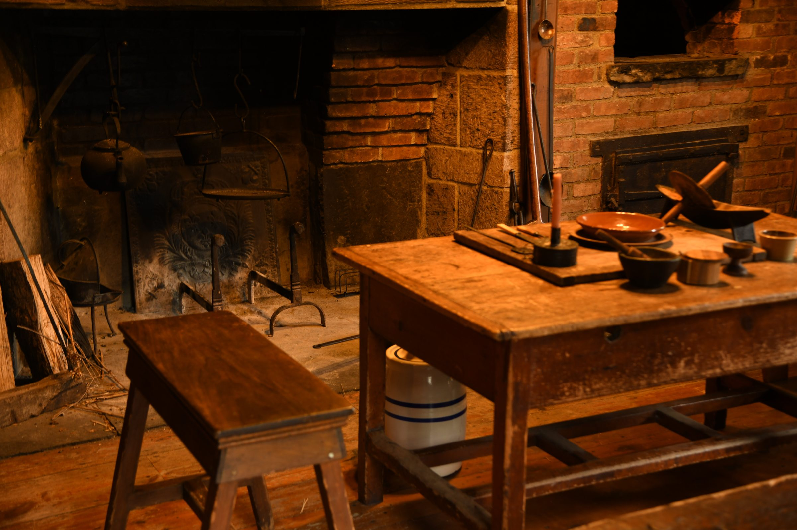

Explore the reconstructed hearth kitchen and discover how this space was used in the 1800s.
Did you know the Crane House and Historic YWCA was originally located on Glenridge Avenue? In 1965, this historic house was moved to its current location on Orange Road to become a museum. When the house was moved, the original Hearth Kitchen was demolished.
In 1968, the hearth kitchen was reconstructed from photographs and drawings, recreating the original space in the Crane family home.
The Crane family lived in this home from 1796 to 1900. In New Jersey, slavery was not abolished until the ratification of the 13th Amendment in 1866. The Crane family had five enslaved workers who lived and worked in this home. Their names are Dine, Joe, Jack, Bett, and Bill.
Dine, as a woman, would have been working in the hearth kitchen in the 1800s. She would be the person in charge of tending to the fire and preparing meals each day.
By 1840, there was no longer anyone enslaved in the Crane family home. At this time, we start to see many Irish immigrant servants working in the household. Over time, many men and women who were Irish, English, or African American were domestic servants. Likely, women servants were still using and working in the hearth kitchen until updated cooking technology was introduced into the home.
In the 1800s, people would have used flint and steel to start their fire.
Ideally, you would never let the fire completely go out. You would make sure at least some coals kept nice and hot so that you could get the fire started up again — because using flint and steel is not easy!
Pots would be on the moving crane directly over the fire. Cooking above the fire was good for soups and hot water for tea.
The other way to cook was on the hearth stones.
First, you would pull out some hot coals from the fire and place them on the stone, then set the spider pan on top of the coals. Why was this pot called a spider pan? It has feet underneath it so that it can stand on top of the hot goals. Any pots that had feet were used on the ground on the stones.
To make the pan hotter, you would add more coals; to cool it, you would take some away — like an older version of our stove-top today.
A pan like this was good for cooking eggs, meats, or vegetables.
A brick oven was not common in every home. The Crane family was fortunate to have one that was used to bake items such as breads, pies, cakes, and cookies. To heat the brick oven, you would build a fire inside and once the bricks inside were hot enough, you would pull out the coals and put in your food to bake.
Move around the hearth by dragging or using the arrow keys.
There are many more items to find: a mortar and pestle, a boat grinder, a butter mold, a brass grater, a coffee grinder, and more.
Visit the Montclair History Center to explore the rich history of the Hearth.
Visit montclairhistory.org ↗
Note: this 3D model was created using 3D Gaussian Splatting. While it closely represents the Hearth, it is not an exact replica, and you may spot subtle artifacts such as feathered edges or surface gaps.
Created by Evaine Sun. AI-assisted tools were used in the development of this website.